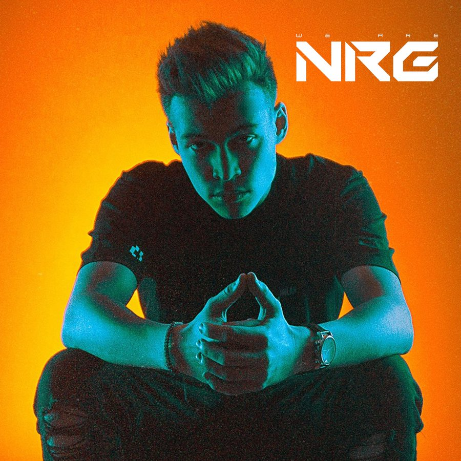

Curbi Shows Some Love to His Favorite Stateside Artists in His We Are NRG 2018 Playlist


While there’s no lack of big-room music out there, finding the tracks that stand out often proves a little more difficult. However, when it comes to the next generation of producers who really stand out from the crowd, bring a unique sound, and are willing to take risks with the music they’re producing, UK producer Curbi is certainly one of the future’s brightest candidates.
It’s no wonder, really, that the Spinnin’ crew were so keen to snap up this young prodigy long before he’d even left his teens. In fact, while Curbi—known by his pals and family simply as Toby—is only 19 years old, he already has several years of huge bangers behind him, including the massive “Discharge,” which broke him into the big-room big league all the way back in 2015.
Since then, Curbi has offered every indication that he wants to keep those bangers rolling in regularly, not to mention innovating and experimenting with his sound at every opportunity (witness recent stormers “Booti” and “RUDE” to see just how far he’s willing to push his sound). As such, we’re more than excited to have him behind the decks at We Are NRG next weekend.
In the lead-up to the show, we caught up with Curbi to find out what makes him tick and tapped him for a proper playlist of tunes from Stateside artists he is up on right now.
How has 2018 been for you so far?
2018 has been reaaally good so far, and it’s already going by so, so quickly. Made a lot of new music and played so many good shows across the whole world—LOVING IT!
You’re into producing massive big-room records, and your tracks sound slick, indeed. For those not familiar with the Curbi sound, how would you describe your approach to production?
Hmm, tricky one… whenever someone asks me this question, I never really know how to answer, because I have such a weird, unexplainable sound, haha. But to fit it into best words, I’d say my music is club-/festival-oriented with a twist of crazy sounds that you don’t hear much—crazy, energetic, loud music, haha.
You’re a UK producer, and you’ve managed to pen some bangers pretty early in your life (in your teens, actually!), and you’ve been releasing on one of the world’s biggest labels for years already. From your perspective, tell us a bit about the Curbi journey so far.
This journey has been mental. I came straight out of high school to then travelling the whole world with my music that I make on my laptop in my bedroom. It has all been so sudden and crazy, but everyday I love it more and more. I was pretty shy when I was in high school, but comparing how I felt back then to now, there’s a huge difference. This position I am in pushes you out of your comfort zone and really brings out the real you. I feel so much more confident and alive; it’s insane! Not only has my music developed, but also my personality has the most.
The relationship with Spinnin’ seems fairly rock solid. Tell us how you got involved with those guys, what it’s like working with them, and how it’s impacted your career.
When I was younger and first started producing music, I always looked up to Spinnin’ so much. I saw that it was possible to have this crazy life of DJing around the world and making whatever music you wanted. Since that day, I was so dedicated to achieving that dream. I made music constantly before and after school and kept pushing myself. I sent my stuff to plenty of DJs, but no one seemed to me that keen. Until one day, I had a track called “Discharge,” which I had sent to Oliver Heldens, because I loved his stuff and thought it would be amazing if he could play it. Shortly after, he responded and said he had sent it on to Spinnin’. A couple of hours later, Spinnin’ sent me an email and said they wanted to sign me; this was the biggest shock I had ever received. I never expected anything like that to happen, but it did, and now we’re here. Our workflow together and relationship is amazing—always has been from the day I signed—and I have to give a big thank-you to everyone working there for their time and effort.
A lot of your recent tracks—like “Booti” and “RUDE,” for instance—show you really messing around with the big-room formula in some very interesting ways. Is it a challenge to find new ways to experiment and do new things with dancefloor music?
I think it’s always a challenge, but at the same time, a challenge is the best thing that can happen to you. I always make the best stuff when it’s a struggle. I push myself to try and make something fresh and not slack with old sounds. Every time I open up a fresh project, I have no idea what to do—but that’s the fun of it, and something unexpected always comes out of it!
Tell us a bit about the playlist you’ve put together.
These tracks are some of my absolute favourites from the American guys. I love the US sound so much, and I think it’s super mature. There’s a mixture of heavy and chill here, and like I say, these are some of my favourites! Always difficult to find the best stuff because there’s so much of it, but these definitely stand out to me for being slick and unique.
What’s up next for Curbi?
As always, a lot of new music. I’ve got collabs, remixes, solos, and of course, my new EP series, REDLINERS. Keep an eye out, because it’s about to be big, and I’m not going to stop. Exactly the same for my shows. Going to be wild. 😉
We Are NRG 2018 takes place Friday, June 22, and Saturday, June 23, at the NOS Events Center in San Bernardino, CA. Tickets are on sale now.
Follow Curbi on Facebook | Twitter | SoundCloud